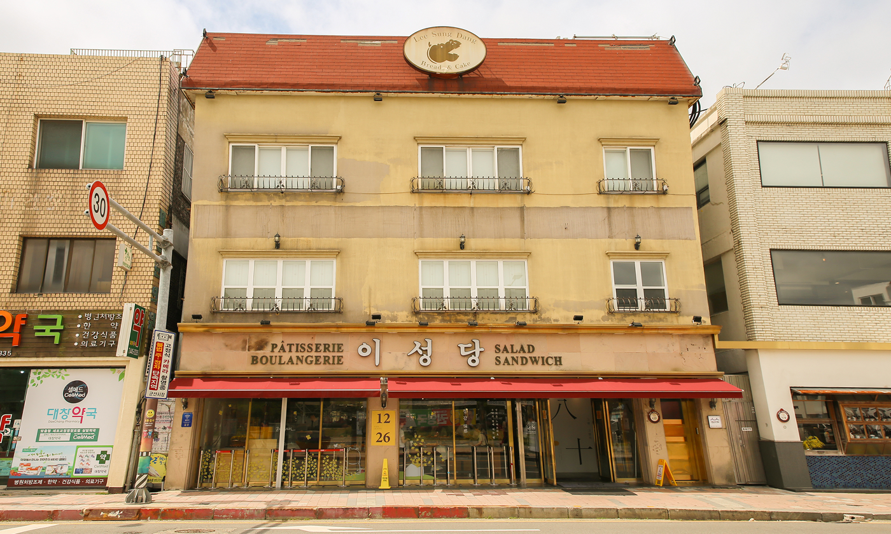
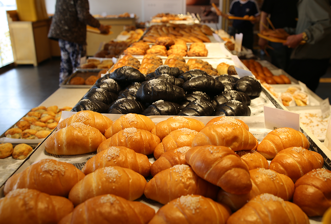
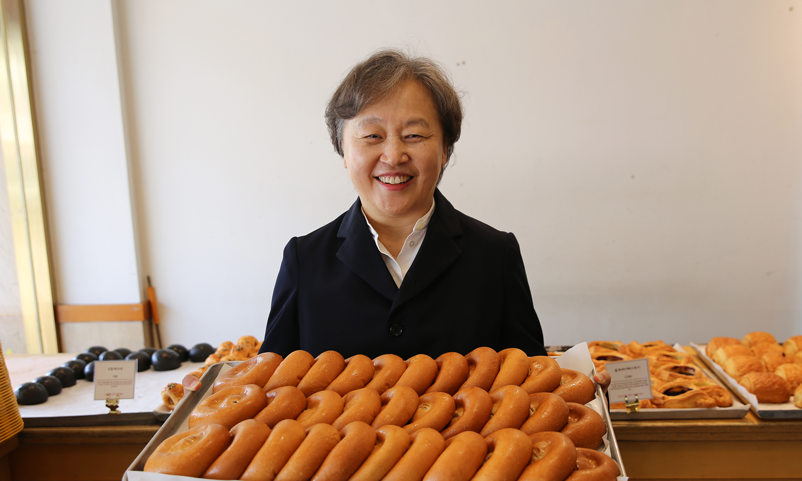

대한민국에서 가장 오래된 빵집, 군산의 이성당. 80년이라는 긴 세월 동안 성실함과 진정성으로 한결같은 맛을 지켜온 이곳에는 또 하나의 특별한 이야기가 있습니다. 바로 조용히, 그러나 꾸준하게 이어져 온 ‘나눔’의 마음입니다. 이성당 4대째를 이어가고 있는 김현주 대표를 만나 그 오랜 시간 속에 담긴 나눔의 철학과 진심을 들어보았습니다
이성당 80년, 그 시작은 성실이었습니다
김현주 대표는 이성당 4대째 운영하고 있습니다. 본격적으로 가게를 맡은 건 2003년부터지만 가족의 일원으로 이성당과 함께한 시간은 훨씬 더 깁니다. 결혼 후 이성당에서 일손을 보태며 보낸 세월이 어느덧 40년을 훌쩍 넘었습니다.

시어머니는 새벽 4시에 일어나 하루도 빠짐없이 가게를 책임지셨어요. 정말 성실하게 일하셨죠.
저는 그분들이 다져놓은 기반 위에서 운영을 이어받은 셈이에요.
저는 그분들이 다져놓은 기반 위에서 운영을 이어받은 셈이에요.


김 대표는 ‘성실함’과 ‘진정성’을 이성당의 가장 중요한 가치로 꼽습니다. 빠르게 변화하는 외식 산업 속에서도 흔들림 없이 자리를 지킬 수 있었던 이유 역시, 그 깊이 있는 신념 덕분입니다.
빵을 만드는 것부터 나눔까지, 정성을 다합니다
이성당은 단지 맛있는 빵을 파는 곳이 아닙니다. 사람을 생각하며 빵을 굽는 곳입니다. “음식을 만든다는 건, 사람 입에 들어가는 것을 책임지는 일”이라며 김 대표는 재료와 공정 하나하나에 최선을 다하고 있다고 말합니다.
그런 정성은 자연스럽게 ‘나눔’으로 이어졌습니다. 남는 빵을 나누는 것이 아니라, 새로 만든 빵을 정성껏 포장해 꼭 필요한 이들에게 전합니다.


저는 모두가 우리 가게 손님이라고 생각해요. 나눔도 같은 마음으로 해요. 맛있게 드시고, 기분 좋아지셨으면 하는 마음뿐이에요.
월드비전과 함께한 11년, 신뢰로 이어갑니다
김 대표와 월드비전의 인연은 1999년으로 거슬러 올라갑니다. 군산 가정개발센터 아동들의 생일을 축하하는 케이크를 후원한 것이 시작이었습니다. 당시 현장에서 월드비전 활동을 직접 보며 ‘이런 단체라면 믿고 함께할 수 있겠다’는 확신이 들었다고 합니다.
그렇게 2013년부터는 전 세계 도움이 필요한 아이들을 위한 식수 및 교육 사업을 정기적으로 후원하고 있습니다.
그러다 월드비전을 만나게 됐고, 벌써 11년이 됐네요.
“후원금이 어떻게 쓰였는지 자주 알려주세요. 단순한 보고서가 아니라 어떤 변화가 있었는지를 진심 어린 언어로 전해주시더라고요. 현장에서 아이들을 위해 발로 뛰는 분들의 이야기를 들을 때마다 ‘이 단체는 믿을 수 있겠다’는 생각이 들어요. 나눔이 헛되지 않다는 믿음, 그게 제가 11년째 후원을 이어가는 이유예요.”
* 밥피어스아너클럽:
월드비전 창립자인 '밥피어스'의 이름을 딴 고액 후원자 모임. 누적 후원금 1억 원 이상인 후원자 중 다양한 지구촌 문제에 공감하고, 나눔의 가치를 알리는 데 앞장서는 후원자를 회원으로 위촉한다.
기업에서 가족까지, 나눔의 마음을 확장합니다
김 대표는 지금도 이성당 안팎에서 누구보다 바쁘게 움직이고 있습니다. 한 달에 두 번 있는 휴일을 제외하고는 대부분 가게에서 하루를 보냅니다. 그 바쁜 일상 속에서도 후원과 지역사회 기부 활동을 꾸준히 이어가는 이유는 ‘선한 영향력’에 대한 믿음 때문입니다.
예전에는 종교를 통해 자연스럽게 기부했지만, 요즘은 더 계획적으로 나눔을 실천하려고 해요.
기업이든 개인이든, 누구나 조금씩 할 수 있는 일이거든요.
기업이든 개인이든, 누구나 조금씩 할 수 있는 일이거든요.

최근에는 ‘가족과 함께하는 나눔’에 대한 고민도 깊어졌습니다. 김 대표는 가족들과 함께 나눔의 기쁨을 경험하며, 일상 속에서 ‘함께 살아가는 삶’을 자연스럽게 이어가고 싶다는 바람을 전했습니다.
앞으로도 성실과 나눔의 길을 꾸준히 걷겠습니다
11년의 후원, 80년의 역사. 이성당이 걸어온 길은 결코 짧지 않습니다. 그러나 김 대표는 말합니다. “이 길은 앞으로도 계속될 거예요.” 성실함과 진정성, 그리고 나눔의 마음. 그것이 바로 이성당을 빛나게 하는 가장 큰 이유입니다.
마지막으로 김 대표에게 물었습니다. “대표가 아닌, 한 사람 김현주로서의 행복은 무엇인가요?”
잠시 생각에 잠긴 그는 조용히 웃으며 말했습니다.
큰일 없이 하루하루 잘 지나가는 것. 그게 저에게는 가장 큰 행복이에요. 매일 아침 가게 문을 열고,
손님들과 인사 나누고, 직원들과 하루를 보내며, 또 누군가에게 작은 도움이 될 수 있는 삶. 그게 참 감사하죠.
그렇게 평범하지만 소중한 하루하루가 쌓여,
결국 김현주 대표가 바라는 삶이 되어가고 있었습니다.
그리고 그 삶은 오늘도 따뜻한 빵과 함께
세상과 나눔을 이어가고 있습니다.
결국 김현주 대표가 바라는 삶이 되어가고 있었습니다.
그리고 그 삶은 오늘도 따뜻한 빵과 함께
세상과 나눔을 이어가고 있습니다.
글. 월드비전 커뮤니케이션팀 박현아
사진. 월드비전 커뮤니케이션팀 윤지영
사진. 월드비전 커뮤니케이션팀 윤지영